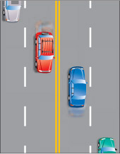
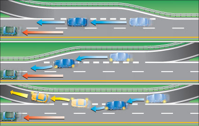
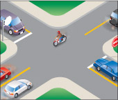
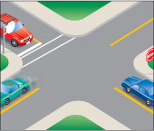
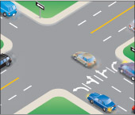
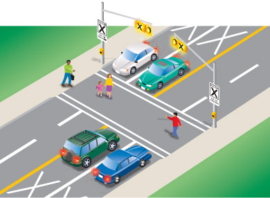
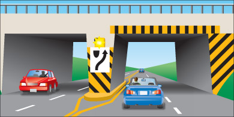

Pavement markings combine with road signs and traffic lights to give you important information about the direction of traffic and where you may and may not travel. Pavement markings divide traffic lanes, show turning lanes, mark pedestrian crossings, indicate obstacles and tell you when it is not safe to pass.
Yellow lines separate traffic travelling in opposite directions. White lines separate traffic travelling in the same direction.

Diagram 3-1
A solid line at the left of your lane means it is unsafe to pass. ('A' should not pass.)

Diagram 3-2
A broken line at the left of your lane means you may pass if the way is clear. ('A' may pass if there are enough broken lines ahead to complete the pass safely.)

Diagram 3-3
Broken lines that are wider and closer together than regular broken lines are called continuity lines. When you see continuity lines on your left side, it generally means the lane you are in is ending or exiting and that you must change lanes if you want to continue in your current direction. Continuity lines on your right mean your lane will continue unaffected.

Diagram 3-4
A stop line is a single white line painted across the road at an intersection. It shows where you must stop. If there is no stop line marked on the road, stop at the crosswalk, marked or not. If there is no crosswalk, stop at the edge of the sidewalk. If there is no sidewalk, stop at the edge of the intersection.

Diagram 3-5
A crosswalk is marked by two parallel white lines painted across the road. However, crosswalks at intersections are not always marked. If there is no stop line, stop at the crosswalk. If there is no crosswalk, stop at the edge of the sidewalk. If there is no sidewalk, stop at the edge of the intersection.

Diagram 3-6
A white arrow painted on a lane means you may move only in the direction of the arrow.

Diagram 3-7
Pedestrian crossovers are identified by specific signs, overhead yellow lights, and pavement markings. Pedestrian crossovers are marked by two white double parallel lines across the road with an X in each lane approaching it.
Drivers and cyclists must stop before the line and yield to pedestrians until pedestrians have completely crossed the road and cleared the roadway.

Diagram 3-8
Two solid lines painted on the pavement guide traffic away from fixed objects such as bridge piers or concrete islands. Yellow and black markings are also painted on the objects themselves as warnings.

Diagram 3-9
Summary
By the end of this section, you should know:
- How pavement markings are used to control traffic
- What the different colours and types of markings are used to indicate